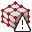
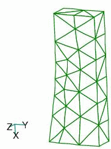
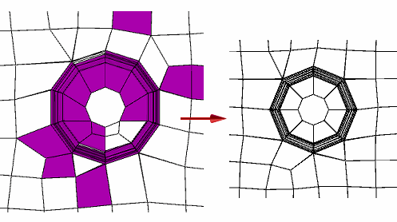

Examining the mesh
You can examine the mesh to identify areas that need to be improved. You can locate areas of poor mesh quality, apply mesh sizing to those areas, and then remesh the affected part.
Mesh status indicators
After meshing, the status of the mesh for individual bodies is indicated by icons on the Simulation pane→Mesh node. Begin by identifying the mesh status indicator, as defined in the following table.
|
This mesh status icon |
Indicates |
Action needed |
|
Good quality mesh. |
None. |
|
|
|
Poor quality mesh. |
Use the Show Poor Quality command to identify the mesh elements with poor quality. For more information, see Identifying areas of poor mesh quality. |
|
 |
Meshing failed. |
Review the part in the Geometry Inspector dialog box. |
|
Not meshed. |
This part was not selected for meshing. |
|
|
Mesh inputs have been modified. |
Use the Remesh command to update the mesh. For more information, see Identifying areas of poor mesh quality. |
Displaying the mesh
When meshing has finished, there are several options you can use to show the mesh.
-
You can render and display the mesh if you select the Show Mesh check box in the Mesh dialog box.
-
You also can use the check box on the Mesh node in the Simulation pane to quickly show and hide the mesh on the model.
Example:In an assembly, you can selectively turn the mesh on and off for each body in the study.


-
For a 3D mesh, the following context commands on the Simulation pane→Mesh are also available to display the mesh:
-
Show Mesh
-
Hide Mesh
-
-
On a sheet metal part, the following commands are available on the Mesh shortcut menu to display the 2D mesh (plate thickness) on the model:
-
Show Plate Thickness
-
Hide Plate Thickness
Example:
-
How mesh quality is defined
Mesh quality is defined in Femap by aspect ratios. Aspect ratios determine the quality of surface triangles going into the tetrahedral mesher. Triangles should have aspect ratios between 1.0 and 2.0. This produces a high-quality surface mesh, which leads to high-quality tetrahedral elements in the solid mesh.
The criteria for mesh quality applies to surface meshes, which are used to mesh thin-wall parts and sheet metal parts, and to solid (tetrahedral) meshes, which are used to mesh part and assembly models.

Solid Edge Simulation supports all of the default aspect ratios employed by Femap to determine element quality.
Improving the mesh
For surface and solid meshing, the outside surface of the model is meshed first with triangles. Every triangle is connected to three others, one on each edge. Based on the outside mesh, the inside volume is then meshed with tetrahedral elements. If the faces of the solid are poorly shaped or degenerate, the outside mesh may have poor quality.
Here are a few techniques you can use to improve the quality of the mesh.
-
You can use the sizing commands to increase the number of mesh elements, producing a more evenly distributed mesh.
Example:You can use the Surface Size command to refine the mesh around the holes in a sheet metal part. Increasing the number of elements from the default Subjective mesh size of 5.73 mm to 10 mm in the Surface Size dialog box creates a more even distribution of mesh elements around the hole.

-
Use the Mesh Options dialog box, which is available when using the Remesh command or the Mesh command, to adjust the mesh parameters. Refer to the examples in the Mesh Options dialog box help topic.
-
Simplify the geometry. Eliminate unnecessary geometry features, such as small surfaces and short edges. On the Mesh Sizing page, under Geometry Preparation Options, you can adjust the value used by the Prepare geometry for meshing algorithm.
-
Under Surface Interior Mesh Growth, review the Growth factor setting. You do not have to use this option to mesh the model. Using the most stringent value sometimes causes problems when meshing complex geometry.
-
Use other options on the Solid Mesh page and the Surface Mesh page to change the shape of the mesh by combining elements.
-
Deleting a mesh
If you want to delete the mesh and start over instead of improving the mesh, you can use the following commands on the context menu of the Simulation pane→Mesh node:
-
 Delete Mesh—Deletes the mesh for a part model.
Delete Mesh—Deletes the mesh for a part model. -
 Delete All Mesh—Deletes the meshes on all of the bodies in the assembly.
Delete All Mesh—Deletes the meshes on all of the bodies in the assembly.
How do I
Mesh the modelActivity: Use subjective mesh sizing
Activity: Apply a surface mesh to a sheet metal part
Activity: Size the mesh on an edge
Activity: Size the mesh on a surface
Learn more
MeshesMesh sizing
Identifying areas of poor mesh quality
Look up more details
Mesh dialog boxMesh Options dialog box
Body Size dialog box
Edge Size dialog box
Surface Size dialog box
Check Element Quality